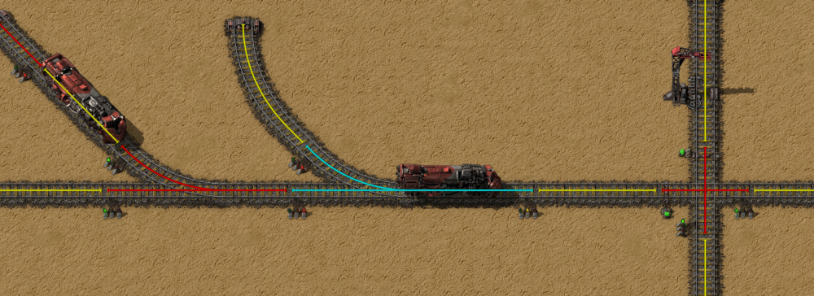
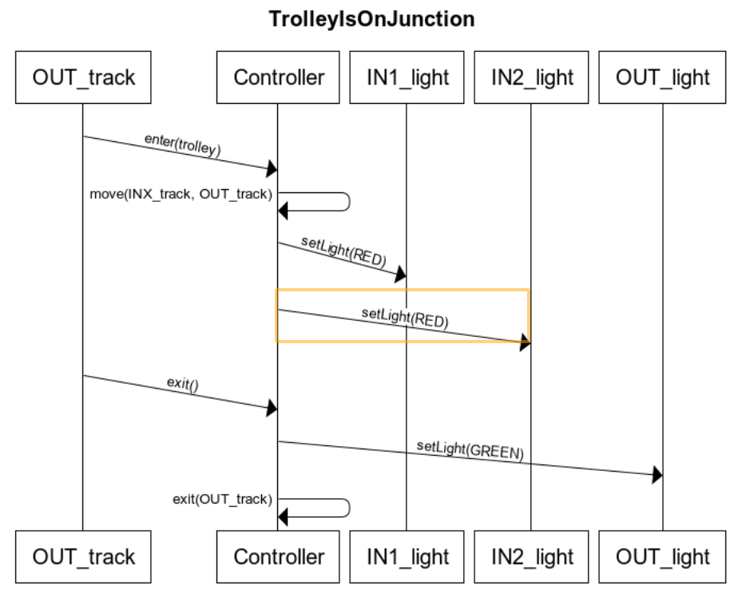
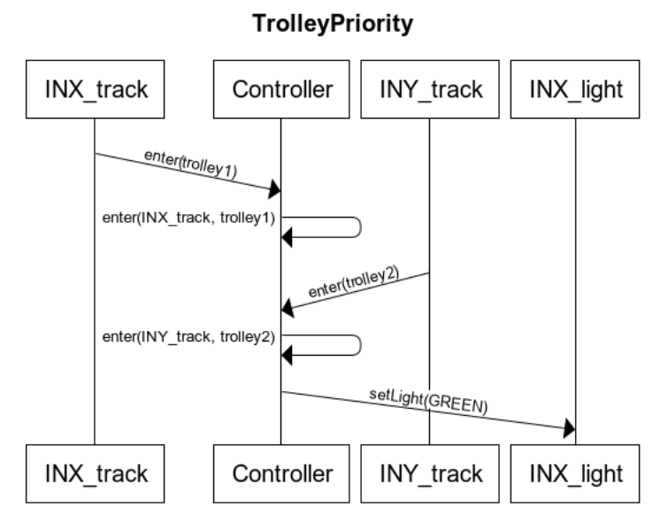

General
Definitions
- With junction we mean: The controller, corresponding lights and tracks.
- With safe we mean that there is no trolley on the outgoing track.
Assumptions about the requirements
- Requirement 2: Only the traffic lights that prevent the entry to the junction are set to red, otherwise the trolley could never leave the junction.
- Requirement 3: Again only the traffic lights that prevent the entry need to be red.
- Requirement 4: Under permission to pass we understand that the trolley just gets green light, it doesn't need to pass.
Other assumptions
- The state of the controller is retained after a shutdown/reboot and messages are never lost even in a shutdown scenario.
- The tracefiles start and end in a default state, meaning junctions start and end empty.
- The track detects the trolley and sends the signal to the controller.
- Time of messages in the log are linear i.e. network delays are non-existent.
- Trollies respect the traffic lights which will prevent them from entering inconsistent states. This implies there can only be a single trolley on a given track.
Images
The differently coloured tracks indicate different sections. e.g. The blue track is the junction and the red and yellow are the incoming tracks
We used this diagram to better represent the problem for ourselves, it is included for completeness. This is not necessarily correct.
Use cases
note X can be either 1 or 2, the same for Y.
| Use case | TrolleyIsOnJunction |
|---|---|
| Scope | Controller and junction |
| Primary actor | Controller |
| Intention | The intention of the trolley is to safely cross the junction. |
| Multiplicity | There can be only one trolley on a junction, while the other trollies wait behind a red light |
| Main success scenario |
|
| Extensions | After the controller was reset and a trolley is still on the junction, the light will turn green upon arrival of a new trolley whilst it is not safe. This isn’t possible given the assumption that the state of the controller is retained after a shutdown. |
| Use case | TrolleyPriority |
|---|---|
| Scope | Controller and junction |
| Primary actor | Controller |
| Intention | The intention is to grant access to the trolley that arrived first. |
| Multiplicity | Every junction needs a separate priority queue |
| Main success scenario |
|
| Extensions | When both trollies arrive at the exact same time, grant a random trolley priority. |
UML sequence diagrams
note X can be either 1 or 2, the same for Y.
Use case TrolleyIsOnJunction
title TrolleyIsOnJunction
OUT_track->(2)Controller: enter(trolley)
Controller->(2)Controller: move(INX_track, OUT_track)
Controller->(2)IN1_light: setLight(RED)
Controller->(2)IN2_light: setLight(RED)
OUT_track->(2)Controller: exit()
Controller->(2)OUT_light: setLight(GREEN)
Controller->(2)Controller: exit(OUT_track)
Use case TrolleyPriority
title TrolleyPriority
INX_track->(2)Controller: enter(trolley1)
Controller->(2)Controller: enter(INX_track, trolley1)
INY_track->(2)Controller: enter(trolley2)
Controller->(2)Controller: enter(INY_track, trolley2)
Controller->(2)INX_light: setLight(GREEN)
Regex
For simplicity these regexes assume that a trolley can only enter or leave a section once. It is possible to use another regex to verify this.
Use case TrolleyIsOnJunction
((. .\n)*(E 3\n)((R [12]\n)|(E [12]\n))*(X 3\n))*
- What happens before a trolley enters a junction is not relevant in this requirement, hence the (. .\n)*.
- (E 3\n) is the trolley entering the track.
- (R [12]\n) says that the light must be red for the incoming lights (again we assume only the incoming should stay red).
- (E [12]\n) other trollies can enter the waiting tracks.
- When (X 3\n) happens, the junction is clear again.
- This pattern of `irrelevant lines' and then a match can happen n times.
Use case TrolleyPriority
(. .\n)*
(((E 1\n)([^G] .\n)*(E 2\n)([^G] .\n)*(G 2\n))|
((E 2\n)([^G] .\n)*(E 1\n)([^G] .\n)*(G 1\n)))
(. .\n)*
- This is a negative match regex. This means if the middle part matches, the whole file will be matched.
- The regex checks for an enter, then any input except green, an enter of another trolley, any input except green again and then green for the wrong track.
- It is important to note we only check for green light and not if the trolley actually entered the junction first (see assumptions).
FSA
In this FSM we use an informal notation we used to employ in another course. * Means all valid transitions (aka [GREX] [123]) minus all other outgoing transitions from that state. When there is no outgoing transition for a certain output it is assumed to go to a dead state.
Use case TrolleyIsOnJunction
Use case TrolleyPriority
Code verification
All traces for trolley is on junction were accepted.
traces 2,3,4 and 6 for trolley priority were accepted. But this is a negative match FSA which means these files are wrong.
Problem/bug in traces
From our observations it looks like there is no minimal timer for the light to be green. If trolley 1 arrives and the junction is empty, it gets green. But if trolley 2 arrives a second later, it will switch the lights. Under our assumptions this isn't a hard error but certainly could be an issue in the real world.
- The intersection is empty
- Trolley 1 arrives
- Light 1 is set to green (as there is nobody)
- Trolley 2 arrives
- Light 1 is set to red and light 2 becomes green
This is probably very confusing for the driver of the trolley.
The other more serious problem is that the priority requirement is not satisfied in most files. Sometimes when a trolley enters the junction, the controller gets confused and gives the wrong track green lights.
In our findings this happens in two cases: When a trolley is on the junction and two trollies are waiting or when a trolley arrives just after the trolley leaves the junction.
A sample trace for the first case is as follows:
E 3
E 1
E 2
X 3
G 2
We see that the second trolley that arrived gets priority. An example of this is tracefile2 line 17484.
The second case is:
E 3
E 1
X 3
E 2
G 2
This is almost the same except the reversed X 3 and E 2. Again the wrong trolley gets priority. An example of this is tracefile4 line 1458.
It's difficult to find out why these errors occurs without any code. A guess could be that priority queues are not updated while there is a trolley on the junction, but it could be something else altogether.